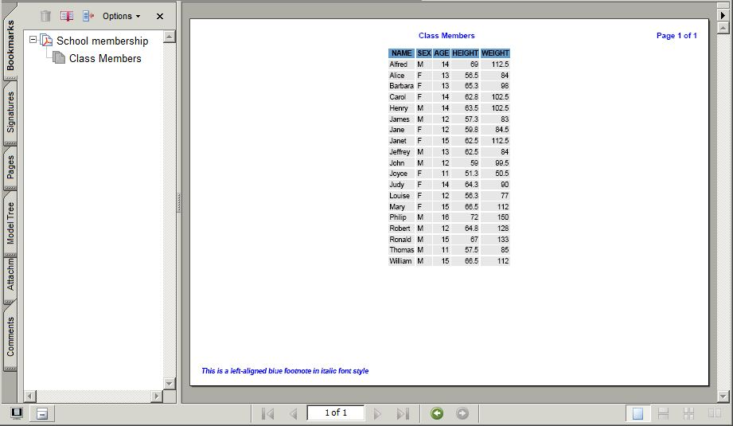
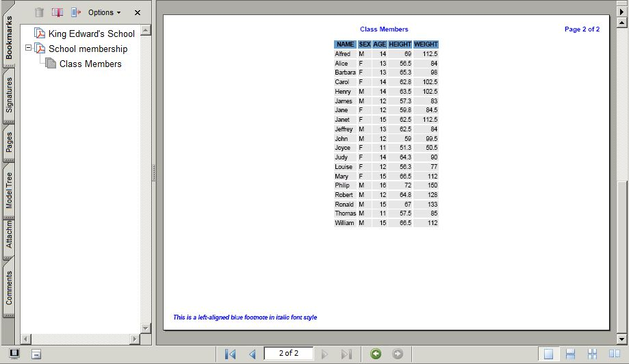

User expectations about the quality of the reports they get have risen
over the years. It is normal now for users to ask for bookmarked PDFs.
Not just that, but they are often particular about the layout. They will
insist on meaningfully labelled and properly structured PDF bookmarks.
They may want the pages to be numbered, perhaps with page numbers displayed
next to the total number of pages. They may want a title page for the report.
These things are possible using ODS PDF but the information on how to program
this in sas are hard to find. The intent of this page is to get you started
using ODS PDF and get you to the point where you can label and structure
PDF bookmarks, create a title page for your PDF report and show page numbers
alongside the page total. The data to be used for this will be the CLASS
dataset in the SASHELP library that you will have access to, assuming you
have a working version of SAS. If you are reading this without access to
SAS then there will be sufficient explanation, examples and illustrations
to enable you to quickly put this information to use when asked to create
a PDF report at your place of work.
Setup Code
Firstly, let us look at code you might want to run before you start creating
your report. Typical code is shown in the box below. You will most likely
want to control the display of the date and page numbering yourself so
you will need to deactivate this using the relevant sas options. You might
want to nullify any titles and footnotes left over from a previous process.
You will need to tell SAS where you want the PDF written to and you will
need to choose an ODS "escape character" that you are unlikely to use in
any text you wish to display in the report, so that ODS is warned that
what follows the escape character is some sort of instruction to ODS to
do some special processing. Programmers often choose to use a carat ("^")
sign for this.
*- Set options and nullify titles and footnotes -; options nodate nonumber center; title1; footnote1;
*- Destination for the PDF file -; %let pdfdest="\\Client\C$\Users\rashleig\Downloads\class.pdf";
*- ODS "escape" character to tell it that what follows is not text
-; ods escapechar="^";
(1) First Attempt
Now we are ready to produce our PDF using ODS PDF. We need to choose a
style for the report. I find BarrettsBlue to be a nice looking style so
we will use that. It is left to you to investigate other styles.
Below is the code to do this. At this stage we will be using both "proc
print" and "proc report". "Proc print" is actually easier to use with ODS
PDF but lacks some of the functionality we are almost certain to need for
more advanced ODS reporting, so we will be dropping use of "proc print"
at an early stage and will be using "proc report" exclusively, which is
a little more messy but easy when you know what to do.
One thing to notice about the "proc report" call is the lack of COLUMN
variables and the lack of DEFINE statements in the "proc report" step.
It is usually better to leave out as much of the structure as syntax will
allow as this can lend itself to automation opportunities in the right
circumstances. Both "proc print" and "proc report" will give very nearly
the same report as used below except that "proc print" does a little better
in choosing a consistent format for displaying numeric values, whereas
"proc report" uses a "BEST." format.
Note that in the code we are suppressing normal listing output using
"ods listing close;" at the start and reinstating with "ods listing;" at
the end.
ods listing close; ods pdf file=&pdfdest style=BarrettsBlue;
title1 "Class Members"; footnote1;
proc print noobs data=sashelp.class; run;
proc report missing nowd data=sashelp.class; run;
ods pdf close; ods listing;
Running the above code gives us a PDF that will look like the following
when opened. Only the "proc report" output is shown. The table looks pleasant
enough but if you look at the bookmarks then you can see that they are
far from helpful. This is something we need to fix.
(2) Using "proclabel" and "contents"
We can give the bookmarks more meaningful labels using "proclabel" to override
"The Print Procedure" and "The Report Procedure" labels at the top level
of the bookmarks and we can use "contents" at the lower levels of the bookmarks.
Take a look at how this is done in the code below.
ods listing close; ods pdf file=&pdfdest style=BarrettsBlue;
And here is what the PDF will look like when open. Note that we have
a lower level for "proc report" that has the label "Table 1". We
will learn how to stop it displaying that lower level.
(3) Using a "holder" variable with "proc report"
Next we will learn how to stop "proc report" displaying tha "Table 1"
level in the report. We have to use a "trick" to do this. Having to use
a "trick" is rather annoying, but there is no way around it at the time
of writing. We have to set up a dummy variable and give it a single value
and then activate a "contents" definition that is set to null, where that
variable value changes, and that will stop the level from being displayed.
This dummy variable is named "holder" and is given the value "1"
(numeric). It could be called any name and given any consistent value but
this is a traditional notation as will be explained on a more advanced
page on this topic on this web site. Don't worry about it for now - just
use it the way you see it being used.
The annoying thing about using this "trick" is that you have to make
sure this "holder" variable exists in every dataset you are reporting.
Usually, you have to put it there by artificial means. This is what I will
do for the CLASS dataset and I will place it in the WORK library as you
can see from the code below.
*- sashelp.class dataset with "holder" variable added -; data work.class; retain holder 1; set sashelp.class; run;
Assuming the above code has been run to add the "holder" variable to
the CLASS dataset then below is how we will use "proc report" to force
it to remove the bottom "Table 1" level. At this point we will discontinue
use of "proc print" as this will not allow us to do more complicated work
with ODS that we might need to do in the future. Note that in the "proc
report" step we are only DEFINE'ing characteristics for the "holder" variable.
We have no COLUMN statement nor DEFINE statements for the other variables
we will be reporting. We do not need to specify these and it is best not
to. It will still display all the variables in the CLASS dataset.
Note that in the "break" line, "contents" is set to a null. There is
nothing inside of the quotes (which can be single quotes or double quotes).
The quotes are not enclosing a space.
ods listing close; ods pdf file=&pdfdest style=BarrettsBlue;
And now, the annoying "Table 1" level is gone, but at the expense
of having to use an equally annoying "trick" to get rid of it.
(4) Adding page numbers and footnotes
Next we will see how to add page numbers and footnotes. Usually, footnotes
are left aligned and often shown in an italic version of a font. We can
"justify" (i.e. place left, right or centre) the different parts of a title
or footnote as we wish. For this example, titles will be centred, page
number labels will be right aligned and footnotes will be italic left justified.
For the page labels, we will show the number of the current page on
the left of the total number of pages. We do this using "{thispage}" and
"{lastpage}" ODS instructions, both of which need to be activated as instructions
by using the ODS escape character in front of each, that we previously
defined.
ods listing close; ods pdf file=&pdfdest style=BarrettsBlue;
title1 j=c "Class Members" j=r "Page ^{thispage} of ^{lastpage}"; footnote1 j=l c=blue italic "This is a left aligned blue footnote in italic font style";
Now we see the page number label and footnote added.

(5) Adding a title page (but bad page numbering)
Next I will show you how to add a title page to the report. We just want
this as large bold black writing on a white background without the grey
and blue colours of the tables that the style BarrettsBlue gives us by
default. First, let us create the dataset that will be used to display
the text of the title page. Note that I am using the ODS escape character
to signify that I want to output some "newlines" (^n) to give me spacing
before the first title line and between the first title line and the second
title line.
Something is going to go wrong with the page numbering on this first
attempt, as you will see.
First, the code for the title dataset. And "yes", it needs a "holder"
variable as well, in case you were wondering.This will be true in very
nearly all cases.
*- Title page dataset -; data _pdftitle; holder=1; text="^n^n^n^nKing Edward's School^n^n^n^n^n Date and Time: %sysfunc(datetime(),datetime21.)"; run;
And now for the code. There are a lot of "style" instructions for the
title page that nullify the BarrettsBlue style so that it gives purely
black on white with no hint of any grid lines. You will never be able to
remember the code needed to achieve this for the title page. I can't remember
the code either. But it is a simple matter to find this page on the Internet
and copy and paste what is in the code box below.
ods listing close; ods pdf file=&pdfdest style=BarrettsBlue;
*- No titles or footnotes are to be seen on the title page -; title1; footnote1;
*- produce the title page -; ods proclabel "King Edward's School"; proc report data=_pdftitle nowd noheader style(report)={rules=none
frame=void} contents="" style(column)={font_weight=bold font_size=24pt just=c backgroundcolor=white}; define holder / noprint order; break before holder / page contents=""; run;
title1 j=c "Class Members" j=r "Page ^{thispage} of ^{lastpage}"; footnote1 j=l c=blue italic "This is a left aligned blue footnote in italic font style";
And here is the PDF opened on the title page. It looks good. It is obvious
from the code that creates the title dataset and the above style code how
to adjust the writing size. Everything looks good so far ...
... but below is the table and something has gone wrong with
the page numbering shown on the right of the title line. The total number
of pages is wrong.
(6) Adding a title page (page numbering fixed)
The total number of pages is wrong, as shown above, because this total
is calculated by counting up the number of occurrences of "{lastpage}"
that get written to the PDF. The title page does not have a "{lastpage}"
on it because we do not want to display the page number on the title page.
We know it is page one - that is obvious - it is the title page!
To fix this problem we need to sneak in a "{lastpage}" on the title
page. We can do that in an invisible way. The page has a white background
so if we make "{lastpage}" itself white then we won't be able to see it
on the title page. I don't know if there is a better way to do this but
it works. All that is needed is a "{lastpage}". We don't have to use the
same page label as for the other pages.
ods listing close; ods pdf file=&pdfdest style=BarrettsBlue;
*- Add a white (i.e. invisible) "lastpage" to the title page -; title1 j=r c=w "^{lastpage}"; footnote1;
title1 j=c "Class Members" j=r "Page ^{thispage} of ^{lastpage}"; footnote1 j=l c=blue italic "This is a left aligned blue footnote in italic font style";
And now we see that the page total in the title line has been fixed.

Conclusion
You have been given a step-by-step guide for producing a PDF report using
ODS PDF that shows control of PDF bookmarks, use of a title page and the
use of page numbering with the page total.